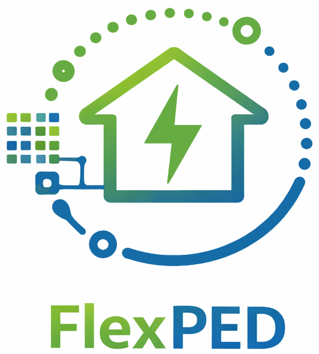
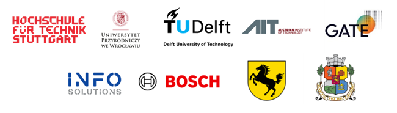
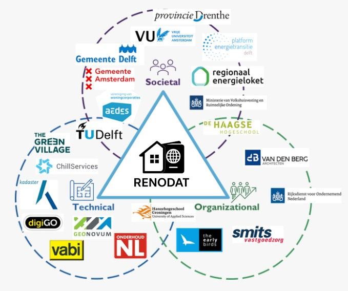
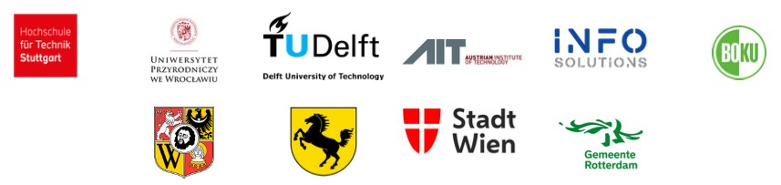

Projects


Energy Data and Flexibility Management for Positive Energy Districts
Duration: 2026-2029
Synopsis: FlexPED focuses on developing an open, intelligent, and scalable energy data management and flexibility framework for city districts, using an Urban Digital Twins (UDT) platform integrated with generative AI as decision support system. The central idea is that an operational UDT platform, integrated with AI-powered agent-based simulation, can actively support stakeholders in co-developing, implementing, and monitoring adaptive and decentralised energy flexibility strategies.
Partners: Hochschule für Technik Stuttgart (Germany), TU Delft (Netherlands), Wroclaw University of Environmental and Life Sciences (Poland), Austrian Institute of Technology (Austria), GATE Institute (Bulgaria), InfoSolutions (Poland), BOSCH GmbH, Municipality of Stuttgart (Germany), Municipality of Sofia (Bulgaria).
Funding: DUT Driving Urban Transition Call 2024. NWO Dutch Research Council (Netherlands), FFG Austrian Research Promotion Agency (Austria), BMBF German Federal Ministry of Education and Research (Germany), NCBR The National Centre for Research and Development (Poland), Bulgarian National Science Fund, Co-funded by the European Union.

Accelerating building RENOvation and decarbonization through DATa integration
Duration: 2025-2029
Synopsis: The main goal of the RenoDAT project is to accelerates energy renovations by addressing data governance, ownership, privacy, and harmonization gaps in the implementation of Building Renovation Passports. By uniting social, technical, pedagogic, and economic expertise, the project develops a reliable data infrastructure to improve renovation quality, streamline processes, and help meet critical climate and societal well-being goals in the Netherlands.
Partners: Aedes, Chill Services (Germany), digiGO, Geonovum, Hanze University of Applied Science, Ministry of Housing and Spatial Planning, Municipality of Amsterdam, Municipality of Delft, OnderhoudNL, Platform Energietransitie Delft, Province Drenthe, Regionaal Energieloket, RVO, Smits Vastgoedzorg, The Early Bird, The Green Village, The Hague University of Applied Science, Vabi, Van den Berg Groep BV, Vrije Universiteit Amsterdam.
Funding: Dutch Research Council (NWO)

CityGML Application Domain Extension for energy-related applications
Duration: 2024 (on-going)
Synopsis: The CityGML Energy Application Domain Extension (or, in short: Energy ADE) offers an open and standardised data model to facilitate multi-scale Urban Energy Modelling applications. The current version 3.0 is based on and builds primarily upon the Energy ADE 1.0, released in 2018, which has been already used in several national and international projects, mainly focusing on the simulation and computation of the building energy performance based on the integration of semantic 3D city models and other sources of information.
Partners: DigiTwins4PEDs project partners, and various partners joining on a volunteer basis. Please refer to the project page for more details.
Funding: Main development started within DigiTwins4PEDs project, now being further development as a larger consortium on voluntary participation, possibly funded by means of other projects.

Utilization of Urban Digital Twins to co-create flexible positive energy districts
Duration: 2023-2026
Synopsis: The main concept of the DigiTwins4PEDs project is to use Urban Digital Twins as a digital representation of the real world, opening up a wide range of possibilities for modeling the energy aspects of cities. This innovative approach aims to create a platform for residents and stakeholders to exchange information, enabling them to visualize various PED scenarios before their actual implementation.
Partners: Hochschule für Technik Stuttgart (Germany), Wroclaw University of Environmental and Life Sciences (Poland), TU Delft (Netherlands), Austrian Institute of Technology (Austria), BOKU - University of Natural Resources and Life Sciences (Austria), InfoSolutions (Poland), Municipality of Stuttgart (Germany), Municipality of Wroclaw (Poland), Municipality of Rotterdam (Netherlands), Municipality of Vienna (Austria).
Funding: DUT Driving Urban Transition Call 2022. FFG Austrian Research Promotion Agency (Austria), BMBF German Federal Ministry of Education and Research (Germany), NCBR The National Centre for Research and Development (Poland), Dutch Research Council (NWO), Co-funded by the European Union.

Party walls & 3D BAG
Investigation on feasibility and implementation of algorithms to compute party walls from the 3D BAG
Duration: 2023
Synopsis: Goal of the project is to evaluate pros and cons of existing algorithms (e.g. their requirements, their accuracy, and their performance), to compute party walls from LoD2 buildings in the 3D BAG, and to define a strategy to implement such a process that can be embedded in the current pipeline to generate and update the 3D BAG on a regular basis.
Partners: 3DGI, Rijksdienst voor Ondernemend Nederland (RVO).
Funding: RVO.